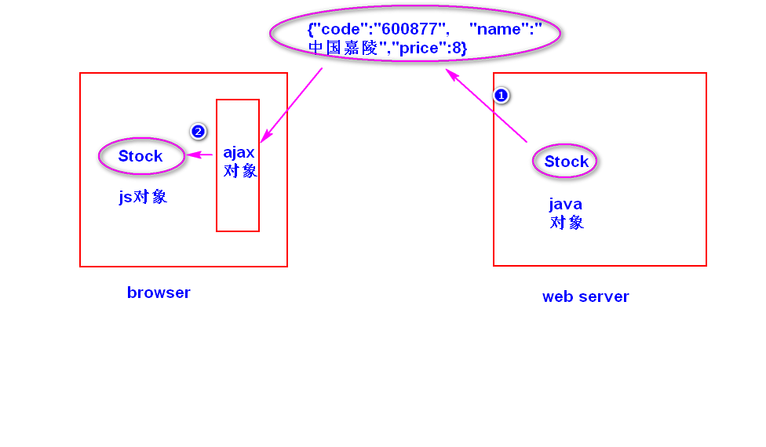

一种轻量级的数据交换格式。
(了解)
1)数据交换
将数据先转换成一种与平台无关的数据格式并发送给
接收方来处理。
比如，将数据转换成xml文档然后发送给接收方来处理。
2)轻量级
相对于xml而言，json文档更小，解析速度更快。
1)表示一个对象
{属性名:属性值,属性名:属性值...}
注:
a.属性名必须使用双引号括起来。
b.属性值可以是string,number,null,true/false,object。
c.属性值如果是string,必须使用双引号括起来。
2)表示由对象组成的数组
[{},{},...]
1)java对象转换成json字符串。
使用jackson提供的api(ObjectMapper)。
2)json字符串转换成js对象。
使用javascript内置的JSON的方法(parse)。

1)用法
$.ajax({});
{}是一个对象，用来指定一些选项参数（控制ajax对象如何向服务器
发送请求）。常见的选项参数有如下一些:
a. url 指定请求地址，比如"quoto.do"。
b. type 指定请求类型，比如"get"，"post"。
c. data 指定请求参数，有两种写法:
写法1: 请求字符中的形式,比如 "uname=Sally"
写法2: 对象形式，比如 {"uname":"Sally"}
d. dataType 指定服务器返回的数据类型:
json json字符串
text 文本
html html文档
xml xml文档
script javascript脚本
e. success 指定一个函数，用来处理服务器返回的数据。
注：当ajax对象收到了服务器返回的所有数据，并且
服务器处理成功。
f. error 指定一个函数，用来处理服务器发生异常的情况。
g. async 指定同步还异步，缺省值是true(异步)。
向服务器发送异步请求，并且将服务器返回的数据直接添加到
符合要求的节点之上。
1)用法
$obj.load(url,[data]);
注:
url:请求地址,比如 "getNumber.do"
data:请求参数，有两种写法（同上） 。